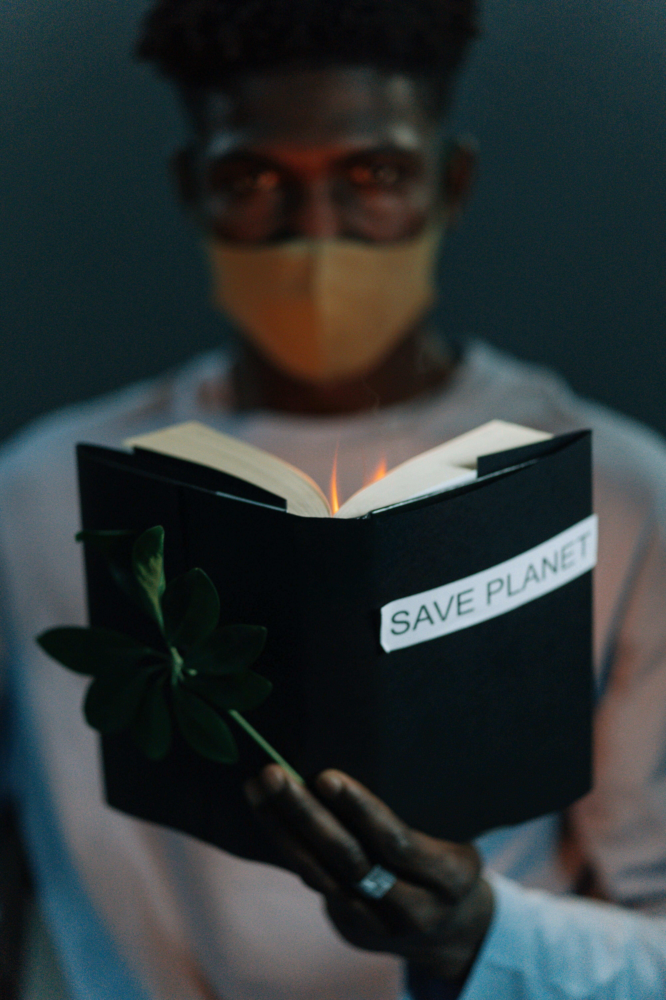
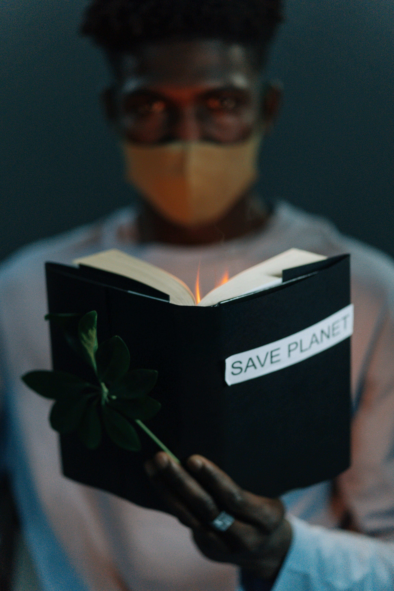

Impactos Atuais
Aumento do nível do mar: O derretimento das calotas polares e das geleiras está causando o aumento do nível do mar, o que ameaça cidades costeiras e ilhas em todo o mundo.
Eventos climáticos extremos: Ondas de calor, secas, inundações e tempestades estão se tornando mais frequentes e intensos, causando grandes danos à infraestrutura, à agricultura e à saúde humana.
Perda de biodiversidade: O aumento da temperatura e as mudanças nos padrões climáticos estão levando à extinção de muitas espécies de animais e plantas.
Impactos na saúde humana: A mudança global do clima está aumentando o risco de doenças como malária, dengue, e outras doenças transmitidas por mosquitos.
Impactos Potenciais
Escassez de água: A seca e o aumento da temperatura podem levar à escassez de água potável em muitas regiões do mundo.
Insegurança alimentar: As mudanças nos padrões climáticos podem reduzir a produção de alimentos, levando à fome e à desnutrição.
Uma nova pandemia: Um estudo feito por cientistas da Universidade de Ottawa, no Canadá, mostra que a próxima pandemia pode ser provocada pelo aquecimento global, por meio do degelo das calotas polares. Em artigo publicado na revista Proceedings of the Royal Society B, os pesquisadores detalharam análises feitas em amostras do solo e sedimentos do Lago Hazen, o maior lago de água doce do Ártico no mundo. O local recebe água de geleiras em processo de descongelamento. Ao realizarem o sequenciamento das amostras, foi possível encontrar material genético semelhante ao de vírus conhecidos, bem como de possíveis hospedeiros animais e vegetais.Cálculos feitos pelos cientistas mostram que o risco de vírus e bactérias “despertarem” aumenta em regiões com grande fluxo de água de degelo glacial.


 
